Adversarial Samples
and Gaussian Processes
Presented by Mike Smith, University of Sheffield
michaeltsmith.org.uk
m.t.smith@sheffield.ac.uk
@mikethomassmith
Adversarial Sample
We take an image and add some carefully crafted noise.

Add the gradient (L-BFGS)
Note: Noise image scaled by 10x. Dog becomes ostrich
Szegedy, et al. 2014 (original paper describing AS in DNNs)
Jacobian Saliency Map algorithm - JSMA
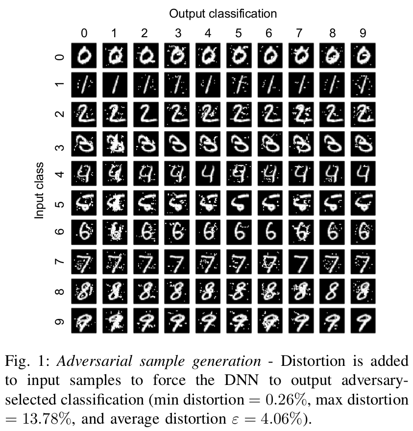Maximally perturb the feature (pixel) with greatest gradient (wrt class) [Papernot, 2016].
They find they modify about 4% of pixels in MNIST to produce an Adversarial Sample.
Universal Adversarial Samples

Moosavi-Dezfooli, 2016
Video Road Signs!
Evtimov, 2017 (published?)
Defences Proposed
Various ideas:
- Bradshaw et al. 2017 suggest adding a GP as a final layer.
- Training on a set of adversarial samples to detect them (e.g. Grosse et al. 2017)
- Feature selection (Zhang, 2016, Xu 2017). Also JPG compression (Dzuigaite, 2016).
- Mess with activation functions, etc etc
My work
- Considering a GP classifier.
- $L_0$ norm.
- Prove lower-bound on perturbation required for confident misclassification.
Note that I only use the posterior mean and not the posterior variance to determine if something is confidently classified.
Note: Placed confidence thresholds using data - so 90% of training data lies between boundaries. This allows us to control for the lengthscale etc of the classifier.

Aim
- We treat problem as just regression.
- We want to put a bound on the increase to the posterior moving along x-axis (+ve) will cause.
- We consider four cases:
- Reaching Right hand edge of a box
- Starting at left hand edge of a box
- Crossing whole box
- No constraint
Demo
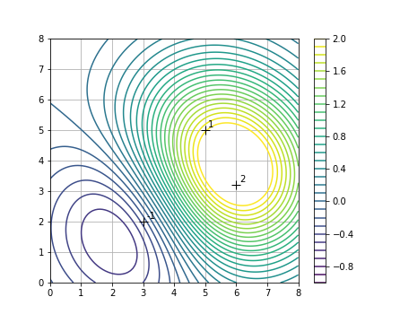Demo
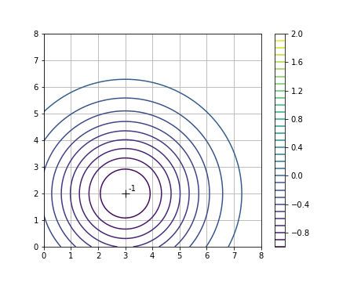Demo
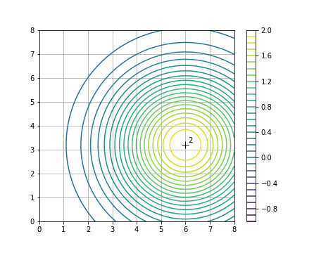Demo
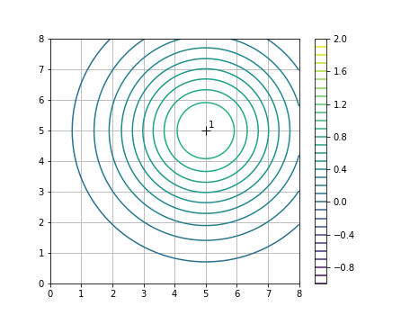Demo (to right)
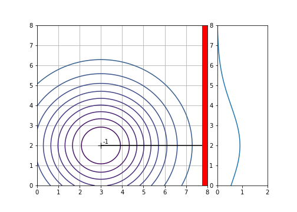Demo (to right)
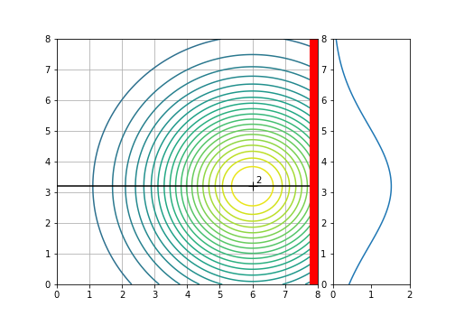Demo (to right)

Demo (from left)
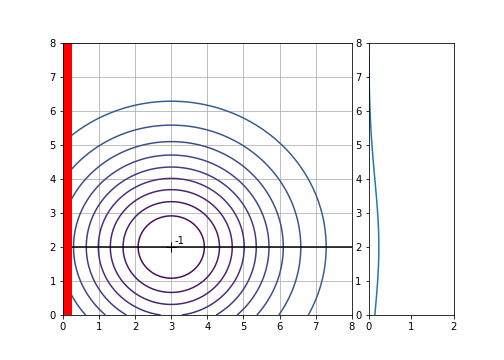Demo (from left)
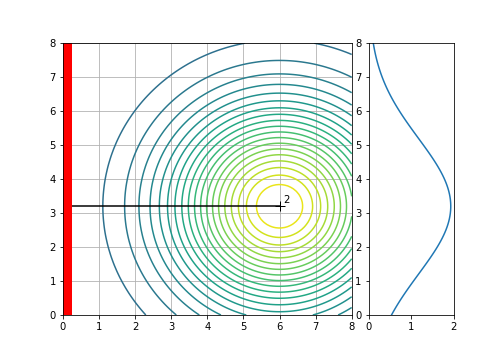Demo (from left)
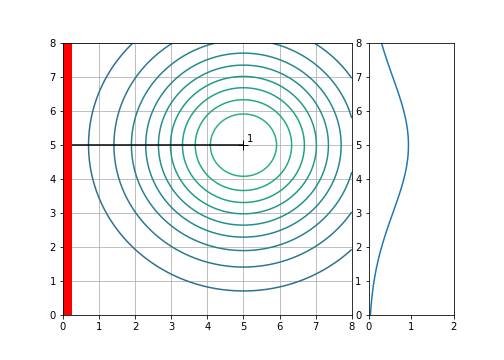Demo (from left to right)
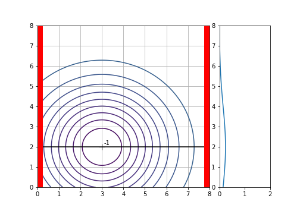Demo (from left to right)
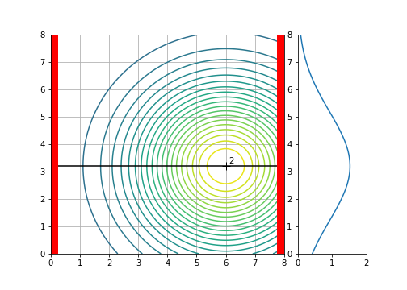Demo (from left to right)

Demo (any)
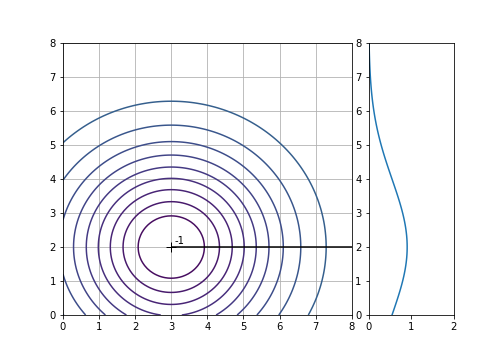Demo (any)
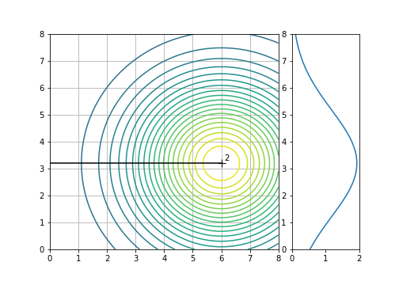Demo (any)
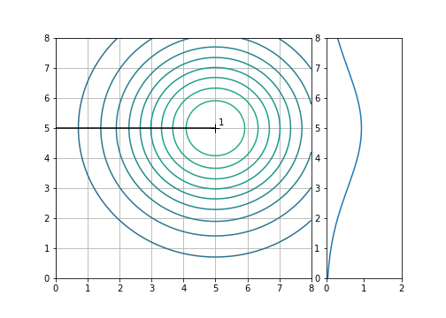Using these results
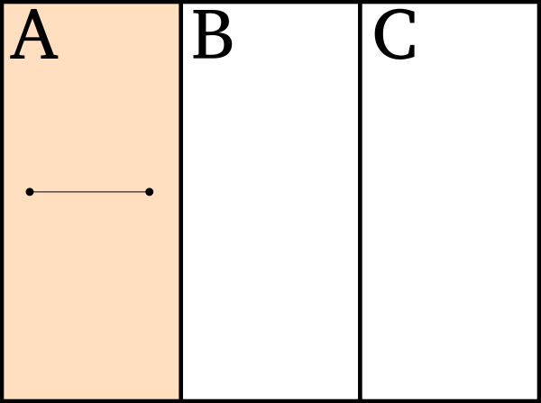- If we split our domain into three boxes.
- First consider if the perturbation started and finished in box A.
- We need to find the maximum of the 'any' condition for that box.
Using these results
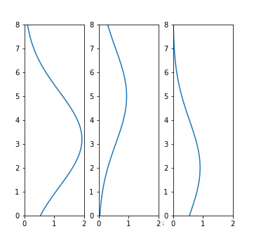- We therefore need to sum over the three distributions caused by the training data.
- Note: PCA and other tricks used to make this work at higher dimensions.
PCA Trick
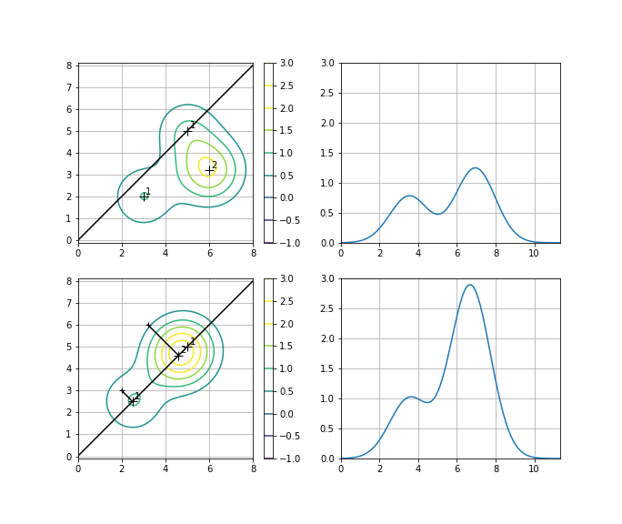- Only works if non-negative...
Dealing with negatives
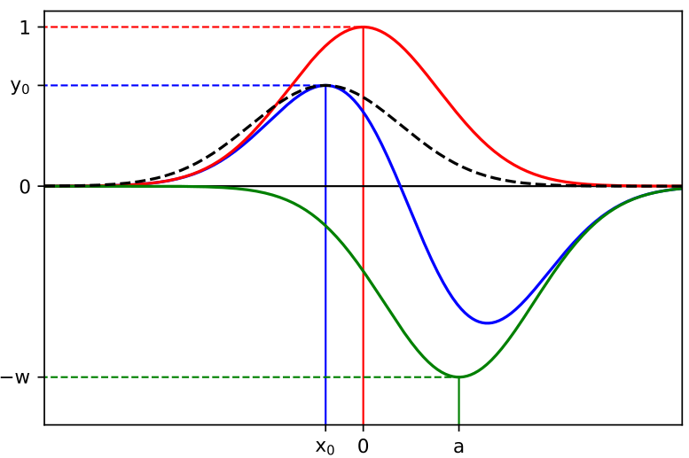- Before applying PCA, merge negative points with positive ones.
Using these results
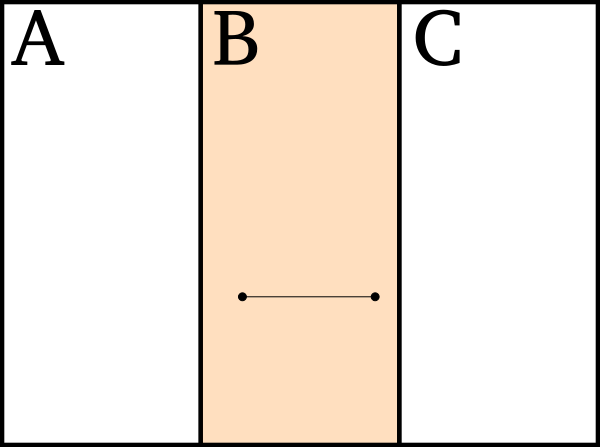- Need to repeat for other combinations...
Using these results
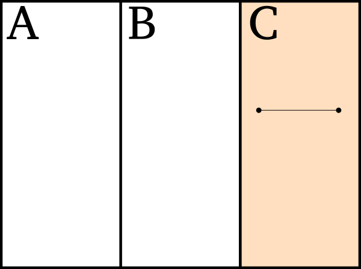- Need to repeat for other combinations...
Using these results
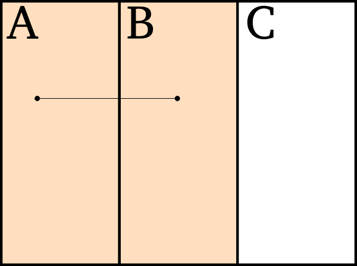- Need to repeat for other combinations...
- For this we first add together the result for 'to right boundary' from A and 'from left boundary' from B.
- And so on...
- Also need to consider multiple dimensions.
Small MNIST 3v5

Synthetic
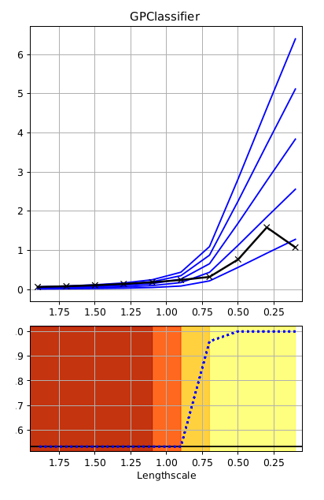Credit
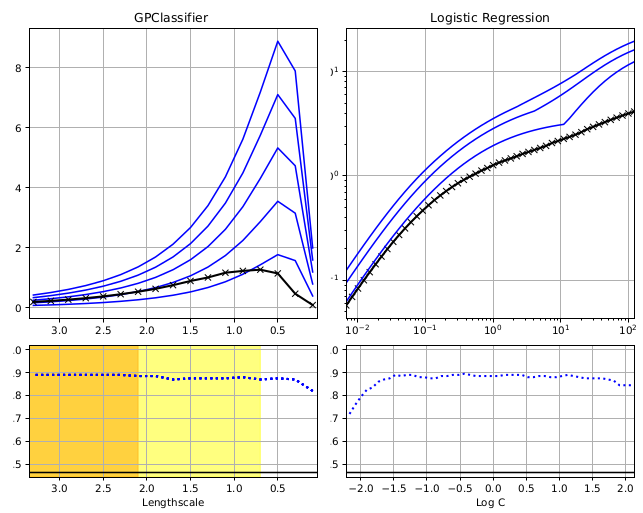15 $\times$ 15 MNIST + Sparse
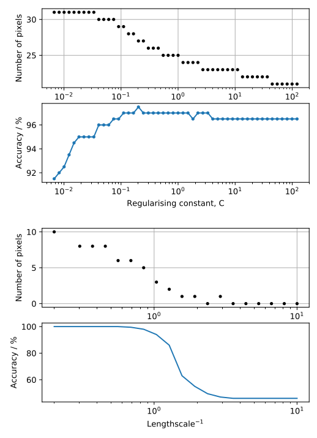Creating Attacks
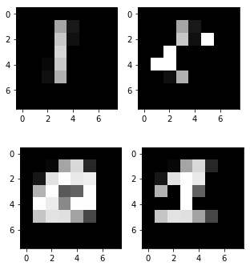Needed a modified attack to reach threshold.
Reach 95th-percentileThoughts & Thanks
Response to lengthscale
Could it be applied to deep GPs?
Other kernels?
Optimise + how to get to higher dimensions?
This tool works by combining several tricks for tightening the bounds, lots more probably exist.
Thanks
- Co-authors: Kathrin Grosse (CISPA Helmholtz Center, Saarland) & Mauricio A Alvarez Lopez (Sheffield).
- Helpful colleagues: Fariba Yousefi & Wil Ward (Sheffield)
- Funders: The EPSRC Project EP/N014162/1.
Szegedy, Christian, et al. "Intriguing properties of neural networks." arXiv preprint arXiv:1312.6199 (2013).
Nguyen, Anh, Jason Yosinski, and Jeff Clune. "Deep neural networks are easily fooled: High confidence predictions for unrecognizable images." Proceedings of the IEEE Conference on Computer Vision and Pattern Recognition. 2015.
Fischer, Volker, et al. "Adversarial Samples for Semantic Image Segmentation." arXiv preprint arXiv:1703.01101 (2017).
Goodfellow, Ian J., Jonathon Shlens, and Christian Szegedy. "Explaining and harnessing adversarial samples." arXiv preprint arXiv:1412.6572 (2014).
Fawzi, Alhussein, Omar Fawzi, and Pascal Frossard. "Analysis of classifiers' robustness to adversarial perturbations." arXiv preprint arXiv:1502.02590 (2015).
Tabacof, Pedro, and Eduardo Valle. "Exploring the space of adversarial images." Neural Networks (IJCNN), 2016 International Joint Conference on. IEEE, 2016.
Papernot, Nicolas, Patrick McDaniel, and Ian Goodfellow. "Transferability in machine learning: from phenomena to black-box attacks using adversarial samples." arXiv preprint arXiv:1605.07277 (2016).
Moosavi-Dezfooli, Seyed-Mohsen, et al. "Universal adversarial perturbations." arXiv preprint arXiv:1610.08401 (2016).
Alexey, Goodfellow, and Bengio. "Adversarial samples in the physical world." arXiv preprint arXiv:1607.02533 (2016).
Evtimov, Ivan, et al. "Robust physical-world attacks on machine learning models." arXiv preprint arXiv:1707.08945 (2017).
Papernot, Nicolas, et al. "The limitations of deep learning in adversarial settings." Security and Privacy (EuroS&P), 2016 IEEE European Symposium on. IEEE, 2016b.
Papernot, Nicolas, et al. "Practical black-box attacks against machine learning." Proceedings of the 2017 ACM on Asia Conference on Computer and Communications Security. ACM, 2017.
Carlini, Nicholas, and David Wagner. "Towards evaluating the robustness of neural networks." Security and Privacy (SP), 2017 IEEE Symposium on. IEEE, 2017.
Su, Jiawei, Danilo Vasconcellos Vargas, and Sakurai Kouichi. "One pixel attack for fooling deep neural networks." arXiv preprint arXiv:1710.08864 (2017).
L. Huang, A. D. Joseph, B. Nelson, B. I. P. Rubinstein, and J. D. Tygar, “Adversarial machine learning,” in Proceedings of the 4th ACM Workshop on Security and Artificial Intelligence, AISec 2011, Chicago, IL, USA, October 21, 2011, 2011, pp. 43–58. [Online]. Available: http://doi.acm.org/10.1145/2046684.2046692
K. Grosse, P. Manoharan, N. Papernot, M. Backes, and P. McDaniel, “On the (Statistical) Detection of Adversarial Examples,” ArXiv e-prints, Feb. 2017
J. Bradshaw, A. G. d. G. Matthews, and Z. Ghahramani, “Adversar- ial Examples, Uncertainty, and Transfer Testing Robustness in Gaussian Process Hybrid Deep Networks,” ArXiv e-prints, Jul. 2017.
F. Zhang, P. Chan, B. Biggio, D. Yeung, and F. Roli, “Adversarial fea- ture selection against evasion attacks,” IEEE Transactions on Cybernetics, vol. 46, pp. 766–777, 2016.
W. Xu, D. Evans, and Y. Qi, “Feature Squeezing: Detecting Adversarial Examples in Deep Neural Networks,” ArXiv e-prints, Apr. 2017.
G. K. Dziugaite, Z. Ghahramani, and D. M. Roy, “A study of the effect of jpg compression on adversarial images,” arXiv preprint arXiv:1608.00853, 2016.